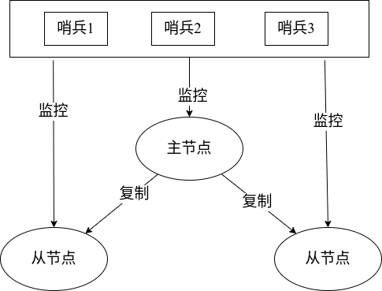

哨兵
哨兵(sentinel)
目的
- 解决主从复制的故障恢复问题
功能
- 监控（Monitoring）：哨兵会不断地检查主节点和从节点是否运作正常。
- 自动故障转移（Automatic failover）：当主节点不能正常工作时，哨兵会开始自动故障转移操作，选择失效的主节点的其中一个从节点晋升为新的主节点，并把原来主节点的从节点复制到这个新的主节点。
- 配置提供者（Configuration provider）：客户端在初始化时，通过连接哨兵来获得当前Redis服务的主节点地址。
- 通知（Notification）：哨兵可以将故障转移的结果发送给客户端。
架构
- 哨兵节点：多个哨兵节点可以组成一个哨兵系统，是一个特殊的节点，不能存放数据
- 数据节点：主节点和从节点

部署、使用
架构：
一主两从：6399，63991，63992 （主从复制）
三个哨兵：29379，26380，26381
哨兵节点的配置文件（sentinel.conf）
protected-mode no
port 26379
daemonize no
pidfile /var/run/redis-sentinel.pid
#为空的时候，日志打到标准输出设备，但是如果是守护进程，则打到/dev/null文件上
logfile ""
#sentinel announce-ip <ip>
#sentinel announce-port <port>
#工作目录
dir /tmp
#该哨兵监控主节点 host为127.0.0.1端口为6379，quorum(法定人数)，至少有quorum个哨兵节点认为该主节点down的时候，才进行故障转移
#不用配置从节点，会自动检测，然后重写该配置文件
#格式：sentinel monitor <master-name> <ip> <redis-port> <quorum>
sentinel monitor mymaster 127.0.0.1 6379 2
#配置主节点的身份验证，该密码会用在主从节点，所以要保证主从节点的密码一致，没有配置身份验证的节点则跳过
#sentinel auth-pass <master-name> <password>
#sentinel auth-user <master-name> <username>
#判断主观下线（subjectively）Default is 30 seconds.
sentinel down-after-milliseconds mymaster 30000
--------------------------------ACL-----------------------
#ACL LOG
acllog-max-len 128
#aclfile /etc/redis/sentinel-users.acl
#------------------------------sentinel-------------------
#requirepass <password>
#sentinel sentinel-user <username>
#sentinel sentinel-pass <password>
#sentinel parallel-syncs <master-name> <numreplicas>
#配置故障转移时，有多少个从节点可以并行向新的主节点发起复制操作
sentinel parallel-syncs mymaster 1
#故障转移超时 Default is 3 minutes.（每个阶段，不是整个阶段）
sentinel failover-timeout mymaster 180000
sentinel deny-scripts-reconfig yes
#SENTINEL rename-command mymaster CONFIG GUESSME
#SENTINEL rename-command mymaster CONFIG CONFIG
SENTINEL resolve-hostnames no
SENTINEL announce-hostnames no
SENTINEL master-reboot-down-after-period mymaster 0简单的哨兵节点配置
protected-mode no
port 26379
daemonize yes
pidfile /var/run/redis-sentinel26379.pid
logfile "26379.log"
sentinel monitor mymaster 127.0.0.1 6399 2开启
使用命令开启哨兵节点
- redis-sentinel 26379.conf
- redis-server 26379.conf –sentinel 查看信息 info sentinel
127.0.0.1:26379> info sentinel
sentinel_masters:1
sentinel_tilt:0
sentinel_tilt_since_seconds:-1
sentinel_running_scripts:0
sentinel_scripts_queue_length:0
sentinel_simulate_failure_flags:0
master0:name=mymaster,status=ok,address=127.0.0.1:6399,slaves=2,sentinels=3配置文件变化
latency-tracking-info-percentiles 50 99 99.9
user default on nopass ~* &* +@all
sentinel myid f179b0d5d2fe201237f9c1827513bd599435da77
# 故障转移的计数器
sentinel config-epoch mymaster 0
sentinel leader-epoch mymaster 0
sentinel current-epoch 0
# 检测到其他两个哨兵也在监控这个主节点
sentinel known-sentinel mymaster 127.0.0.1 26380 fd72329d360b87df311a6be84542e2c965f07a1c
sentinel known-sentinel mymaster 127.0.0.1 26381 85922f086616501b77f2c66028e00c870dbcf859
# 检测到这个主节点有两个从节点
sentinel known-replica mymaster 127.0.0.1 63992
sentinel known-replica mymaster 127.0.0.1 63991故障转移
当发生故障转移时
- 哨兵之间进行选举一个新的主节点
- 并把down掉的主节点变成这个新的主节点的从节点
- 哨兵进行主观判断下线
- 选举哨兵的领导者，进行故障转移的操作，例如通过下面一次日志发现 26379->26381 26380->26380 26381->26381
- Raft算法： 领导者选择一个从节点晋升
- 顺序：优先级最高、offset最大、runId最小
- 并把其他两个节点变成这个新主节点的从节点
日志
新的主节点
5500:S 31 May 2023 14:23:52.506 * Connecting to MASTER 127.0.0.1:6399
5500:S 31 May 2023 14:23:52.507 * MASTER <-> REPLICA sync started
5500:S 31 May 2023 14:23:52.507 # Error condition on socket for SYNC: Connection refused
…………………………一直重连
5500:M 31 May 2023 14:23:52.577 * Discarding previously cached master state.
5500:M 31 May 2023 14:23:52.577 # Setting secondary replication ID to 5d2e3504fcaed0cbedb2dee370702afc0f710cc1, valid up to offset: 73326. New replication ID is 0316a3e64470dd9c24391c2d875bca57cb9c8454
5500:M 31 May 2023 14:23:52.577 * MASTER MODE enabled (
user request from 'id=6 addr=127.0.0.1:58170 laddr=127.0.0.1:63991
fd=10 name=sentinel-85922f08-cmd age=401 idle=0 flags=x db=0 sub=0 psub=0 ssub=0 multi=4
qbuf=188 qbuf-free=20286 argv-mem=4 multi-mem=169 rbs=4096 rbp=2048 obl=45 oll=0 omem=0
tot-mem=25637 events=r cmd=exec user=default redir=-1 resp=2'
)
5500:M 31 May 2023 14:23:52.586 # CONFIG REWRITE executed with success.
--原先的从节点复制到这个新主节点
5500:M 31 May 2023 14:23:52.811 * Replica 127.0.0.1:63992 asks for synchronization
-- 部分复制 到原来的从节点
5500:M 31 May 2023 14:23:52.811 * Partial resynchronization request from 127.0.0.1:63992 accepted. Sending 157 bytes of backlog starting from offset 73326.哨兵1 79-77
5517:X 31 May 2023 14:23:52.278 # +sdown master mymaster 127.0.0.1 6399
5517:X 31 May 2023 14:23:52.392 # +new-epoch 1
5517:X 31 May 2023 14:23:52.399 # +vote-for-leader cf859 1
5517:X 31 May 2023 14:23:52.799 # +config-update-from sentinel cf859 127.0.0.1 26381 @ mymaster 127.0.0.1 6399
//重新配置两个从节点 ---哨兵2 80-1c
5523:X 31 May 2023 14:23:52.304 # +sdown master mymaster 127.0.0.1 6399
5523:X 31 May 2023 14:23:52.377 # +odown master mymaster 127.0.0.1 6399 #quorum 3/2
5523:X 31 May 2023 14:23:52.377 # +new-epoch 1
//此时已经满足quorum的配置，这个哨兵尝试故障转移
5523:X 31 May 2023 14:23:52.377 # +try-failover master mymaster 127.0.0.1 6399
5523:X 31 May 2023 14:23:52.389 # +vote-for-leader 7a1c 1
5523:X 31 May 2023 14:23:52.389 # f859 voted for cf859 1
5523:X 31 May 2023 14:23:52.400 # da77 voted for f859 1
//竞争失败，则由26381进行故障转移的操作
5523:X 31 May 2023 14:23:52.799 # +config-update-from sentinel 85922f086616501b77f2c66028e00c870dbcf859 127.0.0.1 26381 @ mymaster 127.0.0.1 6399
//重新配置两个从节点 ---
哨兵3 81-59
5529:X 31 May 2023 14:23:52.293 # +sdown master mymaster 127.0.0.1 6399
5529:X 31 May 2023 14:23:52.359 # +odown master mymaster 127.0.0.1 6399 #quorum 2/2
5529:X 31 May 2023 14:23:52.359 # +new-epoch 1
5529:X 31 May 2023 14:23:52.359 # +try-failover master mymaster 127.0.0.1 6399
5529:X 31 May 2023 14:23:52.381 # +vote-for-leader f859 1
5529:X 31 May 2023 14:23:52.389 # 7a1c voted for 7a1c 1
5529:X 31 May 2023 14:23:52.400 # da77 voted for f859 1
//竞争成功
//选举
5529:X 31 May 2023 14:23:52.437 # +elected-leader master mymaster 127.0.0.1 6399
//在从节点中选择新的主节点
5529:X 31 May 2023 14:23:52.437 # +failover-state-select-slave master mymaster 127.0.0.1 6399
//选择成功
5529:X 31 May 2023 14:23:52.506 # +selected-slave slave 127.0.0.1:63991 127.0.0.1 63991 @ mymaster 127.0.0.1 6399
//向63991发送 slaveof no one命令，使自己成为主节点
5529:X 31 May 2023 14:23:52.506 * +failover-state-send-slaveof-no one slave 127.0.0.1:63991 127.0.0.1 63991 @ mymaster 127.0.0.1 6399
//提拔选择的节点
5529:X 31 May 2023 14:23:52.577 * +failover-state-wait-promotion slave 127.0.0.1:63991 127.0.0.1 63991 @ mymaster 127.0.0.1 6399
5529:X 31 May 2023 14:23:53.850 # +failover-end master mymaster 127.0.0.1 6399
//切换监控的主节点
5529:X 31 May 2023 14:23:53.850 # +switch-master mymaster 127.0.0.1 6399 127.0.0.1 63991
//重新配置两个从节点
5529:X 31 May 2023 14:23:53.850 * +slave slave 127.0.0.1:63992 127.0.0.1 63992 @ mymaster 127.0.0.1 63991
5529:X 31 May 2023 14:23:53.850 * +slave slave 127.0.0.1:6399 127.0.0.1 6399 @ mymaster 127.0.0.1 63991
5529:X 31 May 2023 14:23:53.863 * Sentinel new configuration saved on disk
5529:X 31 May 2023 14:24:23.917 # +sdown slave 127.0.0.1:6399 127.0.0.1 6399 @ mymaster 127.0.0.1 63991原理
-
定时任务
- 通过向主从节点发送info命令获取最新的主从结构。
- 通过发布订阅功能获取其他哨兵节点的信息。
- 通过向其他节点发送ping命令进行心跳检测，判断是否下线。
-
主观下线
哨兵节点进行心跳检测时，超时，就判断这个主节点下线
-
客观下线
大于等于quorum
-
哨兵节点的领导者
Raft算法
Raft算法
简介
Raft是一种分布式共识算法，用于在分布式系统中维护一致性。它由Stanford大学的Diego Ongaro和John Ousterhout在2014年提出。 Raft通过将分布式系统的复制状态机问题分解为领导人选举、日志复制和安全性三个子问题，使得算法易于理解和实现。Raft将系统中的节点分为三种角色：领导人、跟随者和候选人。在正常情况下，所有节点都是跟随者，只有领导人和候选人之间进行竞选。领导人被选举后，它会负责将日志复制到其它节点，并且在其任期内，如果某个跟随者没有收到其消息，则认定该节点失效。 在Raft中，每个节点维护一个持久化的日志记录所有状态机的指令。当一个指令被提交后，状态机将执行该指令。为了确保一致性，Raft保证在所有的节点上的日志都是相同的，这就保证了在每个节点上执行的指令是相同的。该算法的设计使得它具有高可用性和容错性，即使在出现节点故障或者网络分区的情况下也可以正常工作。
例子
假设有一个分布式存储系统，包含三个节点：A、B和C。每个节点都保存了系统中所有数据的副本，并且在它们之间通过Raft算法保持一致性。 在正常情况下，A、B和C都是跟随者，等待领导人发送命令。当某个节点需要写入数据时，它会将该操作请求发送给领导人。领导人接收到请求后将该操作作为一条指令追加到自己的日志中，并且尝试将该指令复制到其它节点上的日志中。 如果领导人因为某个原因失效，如发生故障或者网络分区，那么其他节点会在一定时间内检测到这个情况，并重新进行选举，选举出新的领导人。 新的领导人会将它的日志与其他节点上的日志进行比较，并尝试将其它节点落后的日志追加到它们的日志中，从而保证所有节点上的日志和数据都是一致的。 这样，当任何一个节点读取数据时，都可以保证获取的数据是最新的，同时在系统中出现任何故障时也可以保证系统仍然可用。
选举领导人
Raft使用心跳机制和超时来进行领导人选举。 在正常情况下，所有的节点都是跟随者，它们等待来自领导人的心跳消息。如果某个节点的超时时间过去了，而且没有收到心跳消息，那么该节点将认为当前的领导人已经失效，并且该节点会转变成候选人状态，向其它节点发起投票请求。 在投票请求中，候选人将自己的ID以及它的最后一条日志条目的索引和任期号发送给其它节点，要求他们投票。如果一个节点收到投票请求后，发现候选人的任期号比自己的任期号大，那么该节点将切换成跟随者状态，并投票给候选人。 候选人需要赢得大多数选票才能成为新的领导人。如果没有一个候选人在当前任期内取得了超过半数的选票，那么该任期将被视为失败，并且所有节点将根据规则开始新的选举，直到某个候选人取得了超过半数的选票为止。 在Raft算法中，由于投票请求只包含候选人的最后一条日志条目的索引和任期号，因此每个节点总是可以根据这些信息来确定谁应该成为领导人，从而避免了选举时的歧义和竞争。